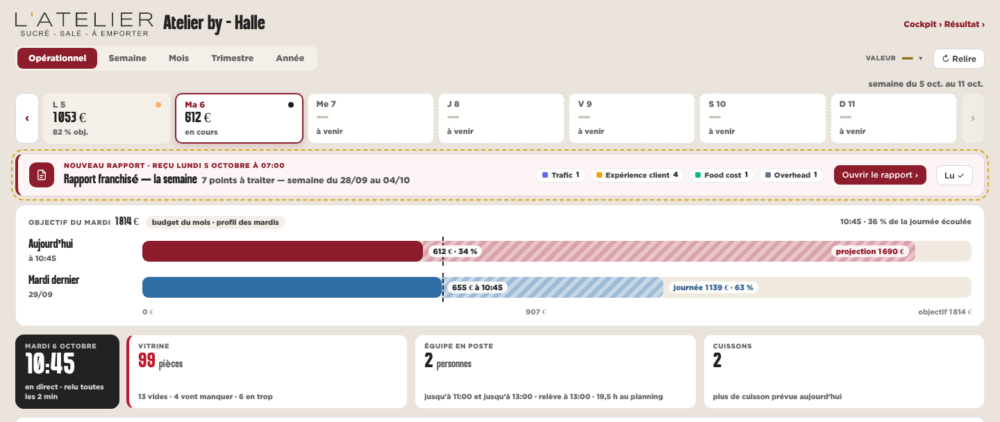
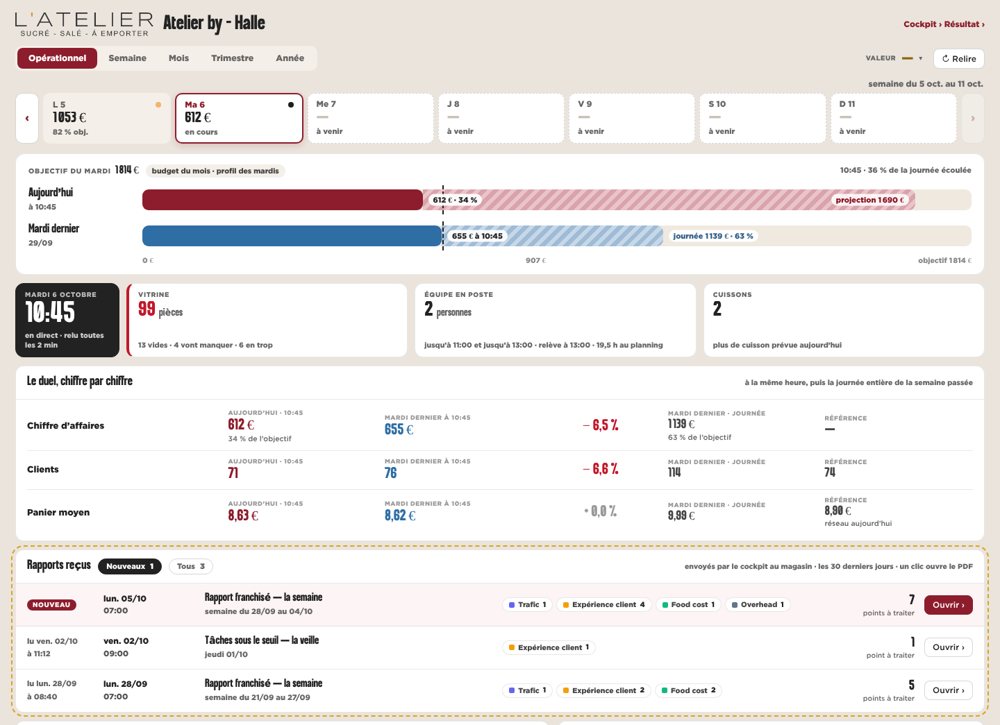
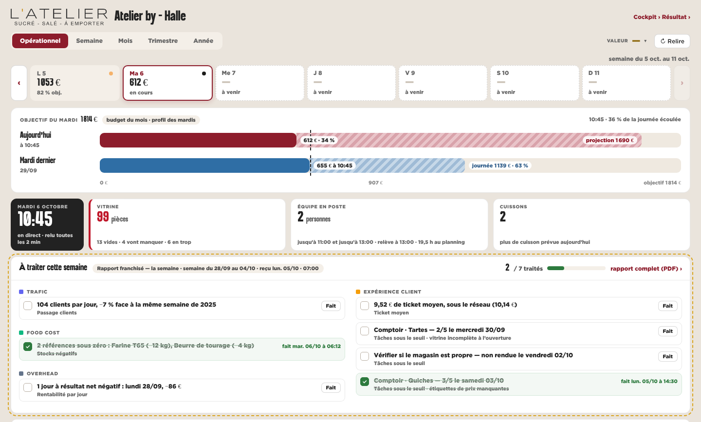
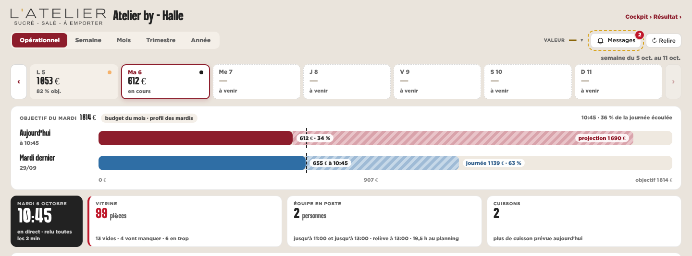
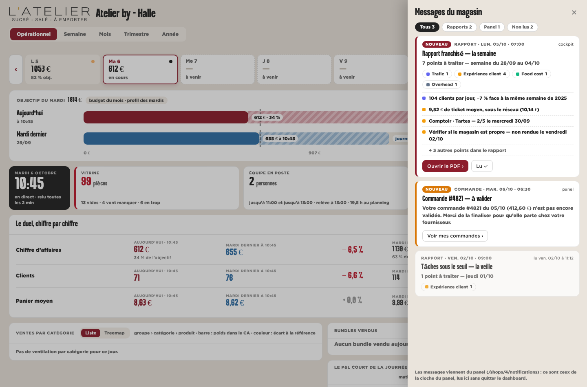
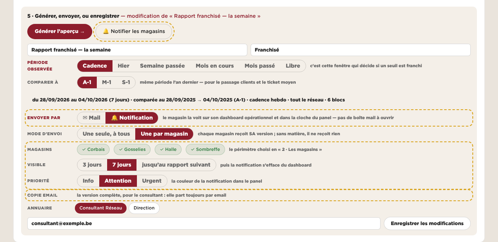
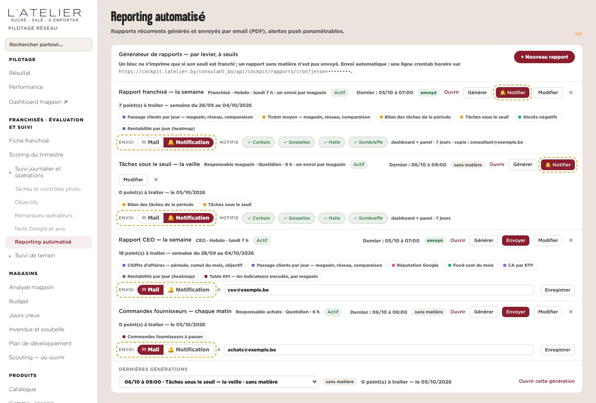
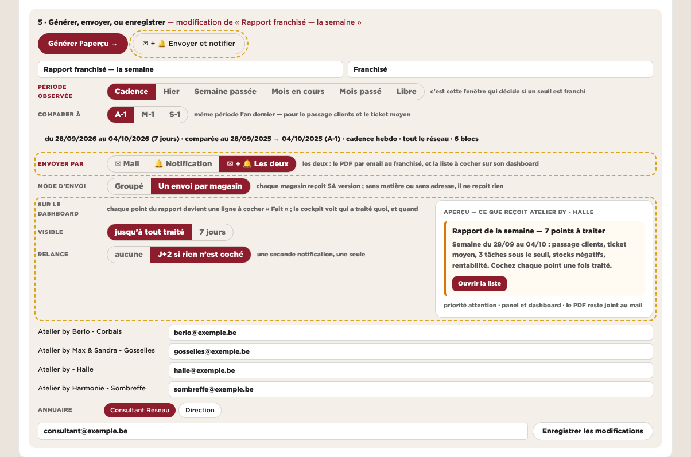
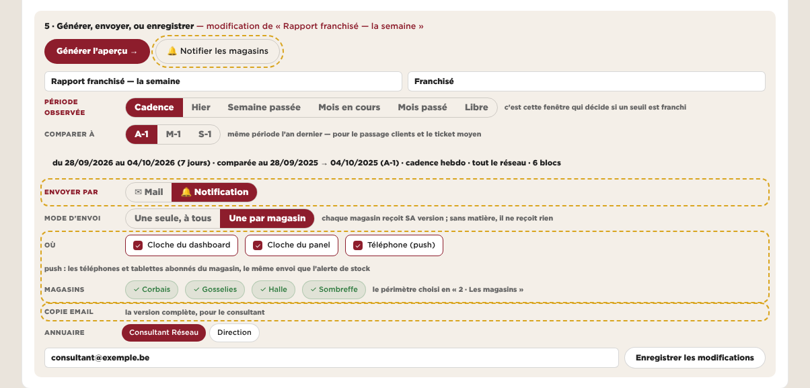

AUn bandeau
Un interrupteur Mail / Notification dans le compositeur. Le magasin voit un bandeau en tête de l’onglet Opérationnel : le rapport, ses points par levier, « Ouvrir le rapport » et « Lu ».
BUne boîte « Rapports reçus »
L’interrupteur sur chaque ligne de la liste des rapports récurrents. Sur le dashboard, une carte des rapports des 30 derniers jours, nouveaux en tête, lus et non lus.
CUne liste à cocher
Trois choix : Mail, Notification, Les deux. Sous les tuiles du moment, chaque point du rapport devient une ligne à cocher « Fait », par levier, avec l’avancement (2 / 7).
DUne cloche
L’interrupteur et le choix des écrans : cloche du dashboard, cloche du panel, téléphone (push). Sur le dashboard, une cloche « Messages » ouvre un tiroir : les rapports et les autres messages du panel.
Le magasin
dashboard opérationnel

le bandeau, entre la semaine et l’objectif du jour

la carte, après le duel chiffre par chiffre

la liste, juste sous les tuiles du moment

la cloche et ses 2 non lus, à côté de « Relire »

le tiroir ouvert
Le cockpit
Reporting automatisé

5 · Générer, envoyer : « Envoyer par », magasins, visibilité, priorité ; le consultant garde sa copie par email

la liste : « Envoi » Mail / Notification sur chaque rapport ; « Notifier » à la place d’« Envoyer »

Mail, Notification ou Les deux ; relance à J+2 ; l’aperçu de ce que reçoit Halle

« Où » : cloche du dashboard, cloche du panel, téléphone (push)
Ce que ça apporte
ce que ça coûte
Apporte
- le plus simple, à coder comme à lire
- le reste du dashboard ne bouge pas
- la même notification arrive dans la cloche du panel
Coûte
- un rapport à la fois, le plus récent
- une fois « Lu », il disparaît : pas d’historique
- le détail reste dans le PDF
Apporte
- l’historique : le rapport de la semaine passée se retrouve
- le canal de chaque rapport se change depuis la liste, sans le compositeur
- lu / non lu, par magasin
Coûte
- une carte de plus dans un dashboard déjà long
- les points restent dans le PDF
Apporte
- le rapport devient du travail suivi : le cockpit sait ce qui est traité, et quand
- pas de PDF à ouvrir au magasin
- l’aperçu montre au CEO ce que le magasin recevra
Coûte
- le plus de développement
- prend de la place en haut du dashboard
- certains points se constatent plus qu’ils ne se « font » (passage clients −7 %)
Apporte
- rien ne s’ajoute au dashboard
- un seul endroit pour tous les messages du magasin
- le push réveille le téléphone (l’abonnement existe déjà pour l’alerte de stock)
Coûte
- se voit moins : il faut penser à ouvrir la cloche
- le push dépend des appareils abonnés
À développer
- le canal sur le rapport (mail, notification)
- à l’envoi, un
POST /notifications par magasin, lien vers le PDF - le bandeau lit
/ventes/notifications (source « rapport ») - « Lu » gardé au cockpit
- tout A
- la liste des envois par magasin sur 30 jours, lue dans les générations du cockpit
- les points par levier gardés sur chaque génération
- tout A
- les points gardés un par un, par magasin
- « Fait » enregistré (une écriture nouvelle) et lu au cockpit
- la relance J+2 dans le cron horaire
- tout A
- le tiroir : tous les messages du panel (la lecture existe)
- le push par
push.php (existe)